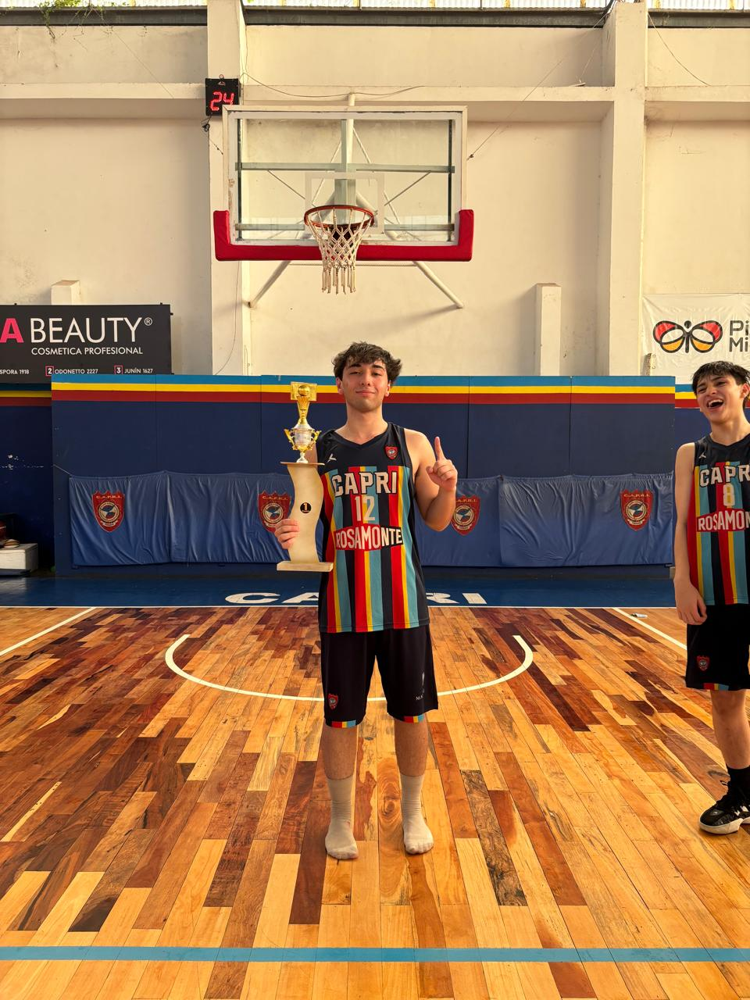

Posadas, Misiones, Argentina - 2026
Me llamo Benjamin Einar Ellis, naci el 12 de Septiembre del 2007 en Esquel, Chubut. Tengo 18 años y estoy terminando el secundario.
Siempre fui a la cancha y jugue a la compu. De chico me movia entre entrenamientos de basquet y ratos frente a la pantalla.
Ahora vivo en Posadas, la ciudad donde creci desde los 10 y donde esta todo lo que conozco.

Mi mama se llama Valeria Puyane y mi papa es Cristian David Ellis. Tengo dos hermanas: Morena Soledad Ellis y Suyay Ellis.
En casa vivimos mi mama y Morena. Son las personas con las que comparto el dia a dia.
Estoy en 6to año del IPESMI Tecnico, orientacion Informatica. Gracias a la institucion aprendi un monton de cosas practicas que ya pude aplicar en proyectos escolares.
Durante el secundario curse materias como:
Trabaje en el Club Capri de Posadas, en dos roles:
Algunas cosas que me gustan:
Cosas que me gustaria aprender:
Musica: escucho de todo pero sobre todo rap y trap.
Deporte: el basquet es el ultimo que jugue, pero tambien hice futbol, canotaje, natacion y futsal.
Siempre quise jugar al basquet y estudiar al mismo tiempo. Eso me costo organizarme, pero lo fui logrando.
Lo que quiero de aca en adelante:
"En el basquet aprendi que el que no se esfuerza en los entrenamientos, no juega los partidos."
Podes encontrarme en LinkedIn:
www.linkedin.com/in/benjamin-ellis-b7b4883b8
Benjamin Einar Ellis - IPESMI Tecnico - 6to año Informatica - 2026